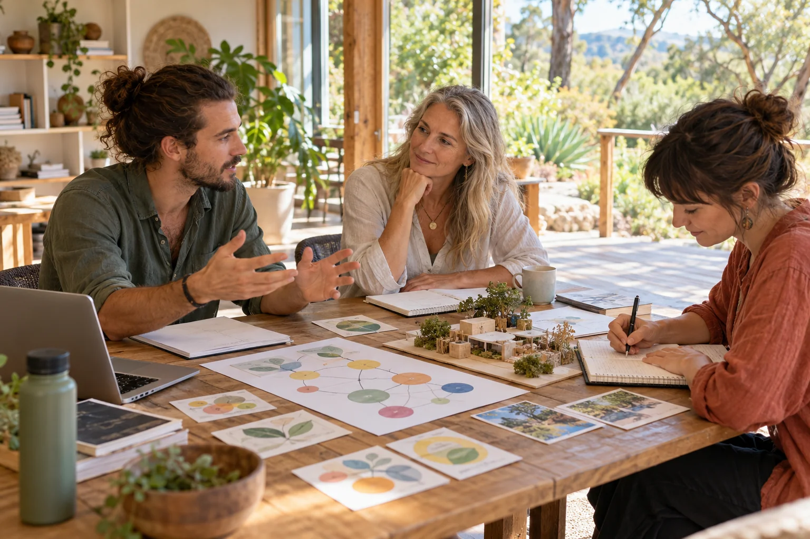

A SIXTY-DAY ADULT LEARNING PROGRESSION
Learn deeply.
Teach through experience.
Develop your own Aura, help another adult learn, and widen your work towards the stewardship of Earth and the solar system.

Become more capable. Help someone else learn.
Aura Teacher Training is Luke Nathan Hayes’s adult learning design for developing a personal Aura and practising how to teach another adult. It begins with lived experience and widens towards shared intelligence, scientific inquiry and civic space stewardship of Earth and the solar system.
This expanded edition gives each of the sixty days its own original reading and a detailed studio guide. Choose a meaningful project, make something inspectable, test it in a changed situation and revise the explanation with the person learning.
60 complete source readings
60 expanded studio guides
6 connected movements
A widening world
- 01Personal meaningDays 1–10 · Life maps, changing selves, embodiment, memory, language and a first teaching encounter.
- 02Learning and reasoningDays 11–20 · Attention, retrieval, personal models, evidence, creativity, reflection and transfer.
- 03Tools and worldsDays 21–30 · Permissioned functions, specialist agents, critique, world models and useful simulations.
- 04Shared intelligenceDays 31–40 · Relationships, plural values, community twins, reciprocity, adult teaching and leadership.
- 05Science and systemsDays 41–50 · Compute, distributed memory, scientific inquiry, ecology, resilience and habitats.
- 06Frontier stewardshipDays 51–60 · Missions, generality, collective intelligence, autonomy, a practicum and a continuing life.
An encounter you can make your own
A family recipe, a repair, a song, a place or a scientific question can become the starting material. The course connects what matters to a person with sources, representations, tools and actions that another adult can understand and question.
Builder, creative, civic and philosophical contributions can share the same demanding task. A paper model and a clear explanation may reveal something a complicated interface misses. The format follows the learner and the question.
Learning becomes clearer when you teach it
Show one useful action, invite the learner to attempt it, then change the example. Listen to their account of what happened. A polished demonstration is different from another person being able to return, explain a choice and use the idea again.
A learning design, with room for a life
The course is a proposal for adult learning, not an accredited qualification or an operating enrolment service. It does not authorise clinical practice or work with children. Everyday Aura learning, the optional adult Genesis research programme and its pressure-session clock remain distinct.
Use a chosen pace, sample information and accessible formats. There is room for rest, support and a different direction. The full original PDF and the website’s additions remain separately identified.